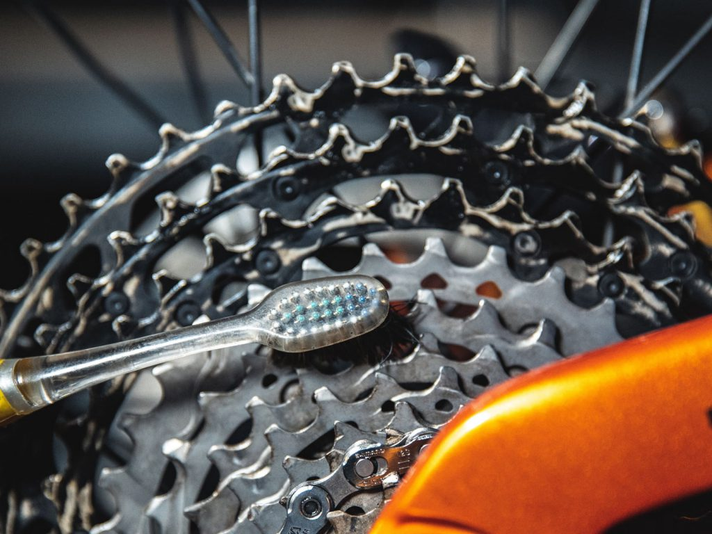
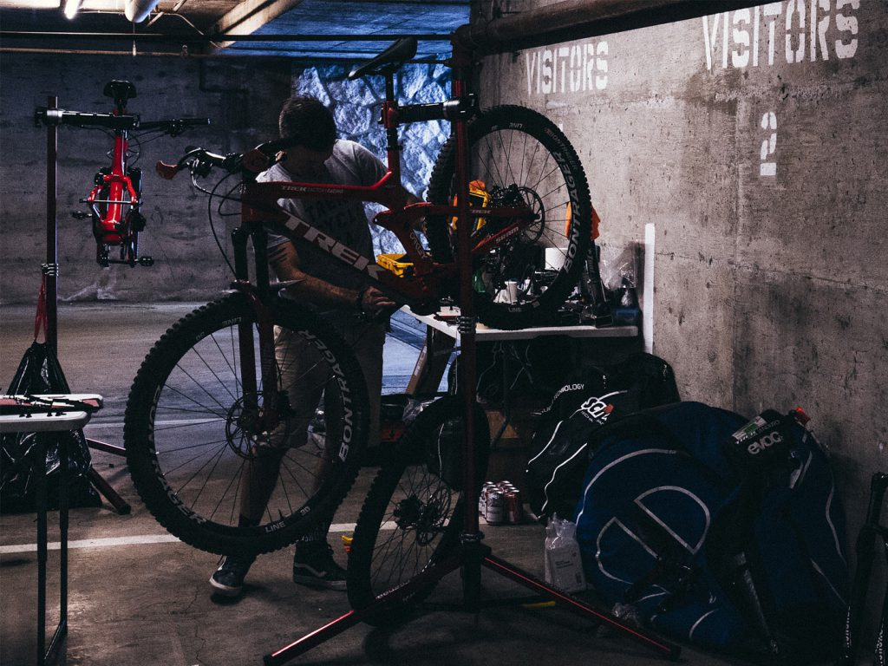

Cho dù bạn đạp xe qua mùa mưa ẩm ướt và hoang dã hay cất xe đạp vào kho để chờ những ngày khô ráo hơn, những đêm dài và thời gian ban ngày ngắn ngủi sẽ mang lại nhiều thời gian để dành cho chiếc xe đạp của bạn thêm một chút tình yêu. Hãy vào gara với đồ uống ấm mà bạn chọn và chiếc cờ lê may mắn của bạn để tìm hiểu những mẹo hàng đầu của chúng tôi.
Đạp xe vào mùa mưa mang lại một số ngày phấn khởi nhất trên đường mòn – thật không may, những khoảng thời gian vui vẻ này thường khiến chúng ta phải trả giá bằng xe đạp. Bùn lớn, mảnh vụn trên đường mòn và mưa có thể gây tổn thương cho hệ thống truyền động của bạn, làm hỏng ổ trục và bám đầy bụi bẩn vào các điểm trục. Tin vui là chúng ta có nhiều thời gian ở nhà hơn, vì vậy thay vì xem loạt phim tiếp theo vào cuối tuần này, hãy dành vài phút để chăm sóc chiếc xe đạp của bạn. Bạn sẽ biết ơn vì có nhiều chuyến đi sắp tới.
10 mẹo để biến chuyến đi mệt mỏi trong mùa mưa thành một chiếc xe nhanh nhẹn và tươi mới
01Sơn nó màu đen (không phải theo nghĩa đen)
Một số người trong chúng tôi không bao giờ bỏ lại phía sau giai đoạn goth tuổi teen của mình, nhưng ngay cả khi bạn có một tủ quần áo đầy màu sắc, chúng tôi khuyên bạn nên mặc một bộ trang phục đen trên nền đen để bắt tay vào bảo dưỡng xe đạp. Sẽ có dầu mỡ, bụi bẩn và mảnh vụn làm ố hầu hết quần áo nhưng ẩn trong màu đen. Nếu bạn không có một bộ trang phục màu đen chắc chắn và sẵn sàng bị bẩn, hãy đeo tạp dề của cửa hàng hoặc bộ quần áo mà bạn không ngại bị vấy bẩn trước khi lao vào bụi bẩn.
02Làm sạch chiếc xe của bạn
Cách tốt nhất là rửa sạch xe đạp của bạn sau mỗi chuyến đi vào mùa mưa để tránh bùn bám vào khung, nhưng điều này thậm chí còn quan trọng hơn khi bạn chuẩn bị mang xe vào xưởng. Giữ không gian làm việc của bạn sạch sẽ bằng cách chà sạch xe đạp bằng bình xịt rửa xe đạp và bộ bàn chải tiện dụng của bạn, sau đó rửa sạch bằng áp lực nước nhẹ, cẩn thận xung quanh ống lót, vòng đệm và vòng bi để tránh đẩy bùn vào chúng. Lau sạch xe đạp của bạn bằng một miếng vải sạch và dành thời gian để làm sạch các vòng đệm trên phuộc, trụ ống nhỏ giọt và giảm xóc nếu bạn đang sử dụng hệ thống treo hoàn toàn trước khi mang nó vào cửa hàng.
03Yêu thương chiếc xe của bạn
Đặt xe đạp của bạn vào giá đỡ và sử dụng dụng cụ làm sạch xích hoặc bàn chải đánh răng cũ để làm sạch mọi mắt xích, dành thời gian kiểm tra độ mòn của từng mắt xích. Xích của bạn có xu hướng mòn nhanh hơn bất kỳ bộ phận nào khác trong hệ thống truyền động và dành thời gian để làm sạch sâu sẽ giúp kéo dài tuổi thọ của xích. Sau khi xích đã được làm sạch hoàn toàn, hãy bôi trơn nó bằng chất bôi trơn ướt và để từ 5 đến 10 phút để chất bôi trơn thấm vào các con lăn và mắt xích. Dầu bôi trơn ướt được ưa chuộng hơn dầu bôi trơn khô khi lái xe vào mùa mưa do độ nhớt dày hơn. Lau sạch dây xích để loại bỏ chất bôi trơn dư thừa bằng giẻ khô, sạch để ngăn bụi bẩn tích tụ.
04Bảo vệ khung sên của bạn
Để giúp ngăn nước và bùn bám vào xe trong tương lai, hãy xịt keo bảo vệ lên giẻ sạch hoặc khăn lau cửa hàng và lau khung xe của bạn. Tránh phun keo bảo vệ trực tiếp lên khung vì nó có thể gây ra sự cố nếu tiếp xúc với má phanh hoặc đĩa phanh.

05Kiểm tra các đai ốc, bu lông
Sử dụng cờ lê lực, siết chặt từng bu lông trên xe đạp của bạn theo yêu cầu về độ căng cụ thể. Cờ lê lực đặc biệt quan trọng khi siết chặt các bu lông xung quanh các bộ phận carbon và trên khung, nơi việc vặn quá chặt có thể gây nứt và hư hỏng nghiêm trọng. Làm việc từ trước ra sau, bắt đầu bằng trục trước và bộ chuyển đổi phanh, di chuyển lên đến pô, tai nghe, cần số và cần phanh, sau đó xuống tay quay, cọc yên và cổ ghế, rồi cuối cùng quay trở lại phần sau của xe đạp tập trung vào phanh sau, derailleur và trục.
06Kiểm tra bánh xe
Kiểm tra lại bánh xe của bạn một lần. Kiểm tra độ mòn của lốp và thay lốp mới nếu chúng cần được chăm sóc. Hoàn thiện thiết lập không săm bằng cách tháo lõi van và sử dụng một chai keo nhỏ để thêm keo vá mới vào lốp. Thay lõi van và bơm đến áp suất lốp mong muốn của bạn. Hãy dành vài phút để kiểm tra các nan hoa – chúng thường bị bỏ quên trong suốt mùa đạp xe, vì vậy hãy nhanh chóng siết chặt bằng tay bất kỳ chỗ nào cảm thấy hơi lỏng.
07Kiểm tra bộ đề xe đạp
Chuyển qua líp từ trên xuống dưới và từ dưới lên trên để đảm bảo mọi thứ đang chuyển động chính xác. Nếu không, hãy điều chỉnh các giới hạn trên bộ đề xe đạp của bạn để căn chỉnh nó tốt hơn hoặc mang nó đến cửa hàng xe đạp địa phương của bạn để được trợ giúp chuyển số vừa phải.

08Lực phanh
Tháo các miếng đệm ra khỏi kẹp phanh và kiểm tra độ mòn của chúng. Nếu chúng có vẻ ngoài tráng men, hãy sử dụng một mảnh giấy nhám mịn để làm xước bề mặt của miếng đệm và loại bỏ cặn tích tụ. Kiểm tra xem má phanh của bạn dày đến mức nào – nếu các vây trên phanh nhô ra xa hơn má phanh, rất có thể đã đến lúc thay chúng bằng một cặp mới.
09Áp suất trong phuộc và hệ thống treo
Việc mất nhiều không khí trong hệ thống treo của bạn trong mùa giải là điều bất thường, nhưng luôn đáng để bạn dành vài phút để kiểm tra khi bạn mang xe đạp đến cửa hàng. Kiểm tra áp suất trong phuộc và hệ thống treo sau bằng cách sử dụng bơm giảm xóc và thực hiện bất kỳ điều chỉnh nào bạn cần. Hoàn tất bằng cách xịt một chút nước xịt hệ thống treo lên các thanh chống để chống ma sát và giữ cho mọi thứ chuyển động trơn tru.
10Lưu ý
Đánh bóng ổ trục chính của xe đạp để có một chuyến đi êm ái hơn. Có rất nhiều mảnh vụn đi kèm khi đạp xe vào mùa mưa và việc dọn sạch cặn bẩn sẽ kéo dài tuổi thọ của các bộ phận. Kéo tay quay để làm sạch giá đỡ phía dưới và tháo phuộc để làm sạch tất cả các vòng bi trong cổ lái, sau đó bôi trơn chúng để chúng sẵn sàng vượt qua những con đường phía trước.
Bảo dưỡng định kỳ 3 tháng một lần giúp xe vận hành êm hơn và tiết kiệm đến 40% chi phí thay thế linh kiện.